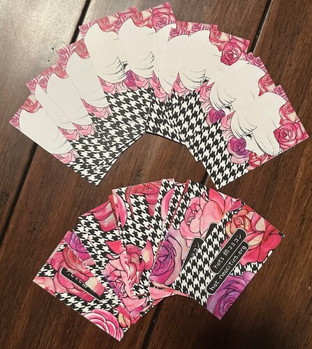
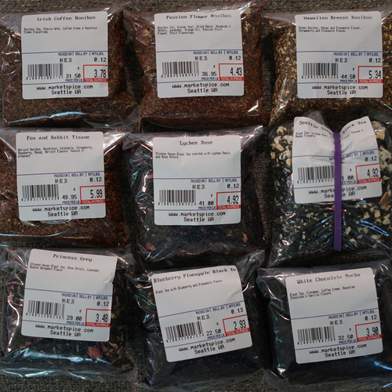
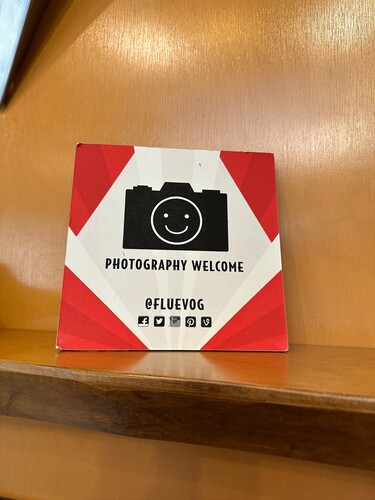
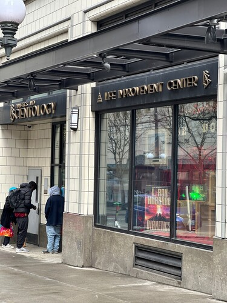
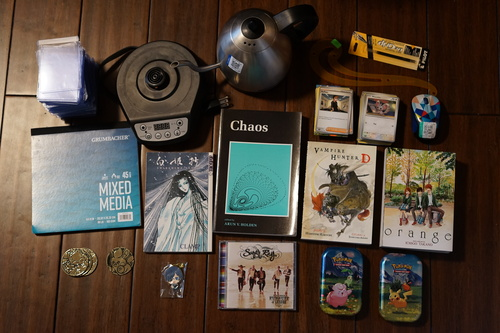

The Sakuracon 2026 report is up! Go check it out!

I printed new cards for Sakuracon! These one are on cardstock so people won't make fun of me for giving them printed paper. I fought with multiple home printers over multiple hours to get these printed again.

I walked around Seattle for a while with Linus on Day 0. We started off by buying $40 of tea.
Linus smelled the cookie seller on the way over but they were closed by the time I was done picking out teas! I dragged him to La Panier instead where he got a cinnamon roll and a choco croissant. He ate the cinnamon roll on the spot and saved the choco croissant for later.................... (spoiler: it went missing)

We checked out Fluevog and they had a couple cool pairs of shoes!

Nearby, we "accidentally" signed up for Sea Org. Be! Do! Have!
I wanted to look at the Korean stationery store MochiThings, so we looked there and Muto Design Japan, next door. I finally found some Seattle themed stationery to send to a friend in Japan who was looking for it last time she was here!
We went to Nordstrom and found some Cool Clothes. I liked this dress by Comme des Garçons but honestly the design is so simple it'd be easy to make. Zimmermann had this really interesting denim dress but the branding all over the buttons was a huge turn off. Chopova Lowena had some wild designs! I wonder who can pull these off?? Sandy Liang's work was cute and girly.
We walked to the top of Nordstrom and took the skybridge over to Pacific Place. Pacific Place looks more dead than the last time every time I go. The Amazon locker in the basement was even broken!
Linus was convinced they'd have cool stuff at Nordstrom Rack, but we found they didn't even carry Citizens of Humanity jeans! Total bust!
If you haven't heard, Den of Angels is closing in August. It's probably the worst online news I've ever heard.
We were lucky to have it for so long and I'm devastated it's ending.
Where do we go? Nowhere? It's a huge bummer. I'm not joining Discord, FB, or IG so I guess I'll choose to be alone with close friends.

I have this one already. I love it. I'm terrified of it breaking. I love it so much I bought a backup.
After almost forgetting my mouse at home again, I have bought a second one to keep packed.
RYAN FOUND PAWMI!!!!
For Linus. I looked hard for a Sebastian...